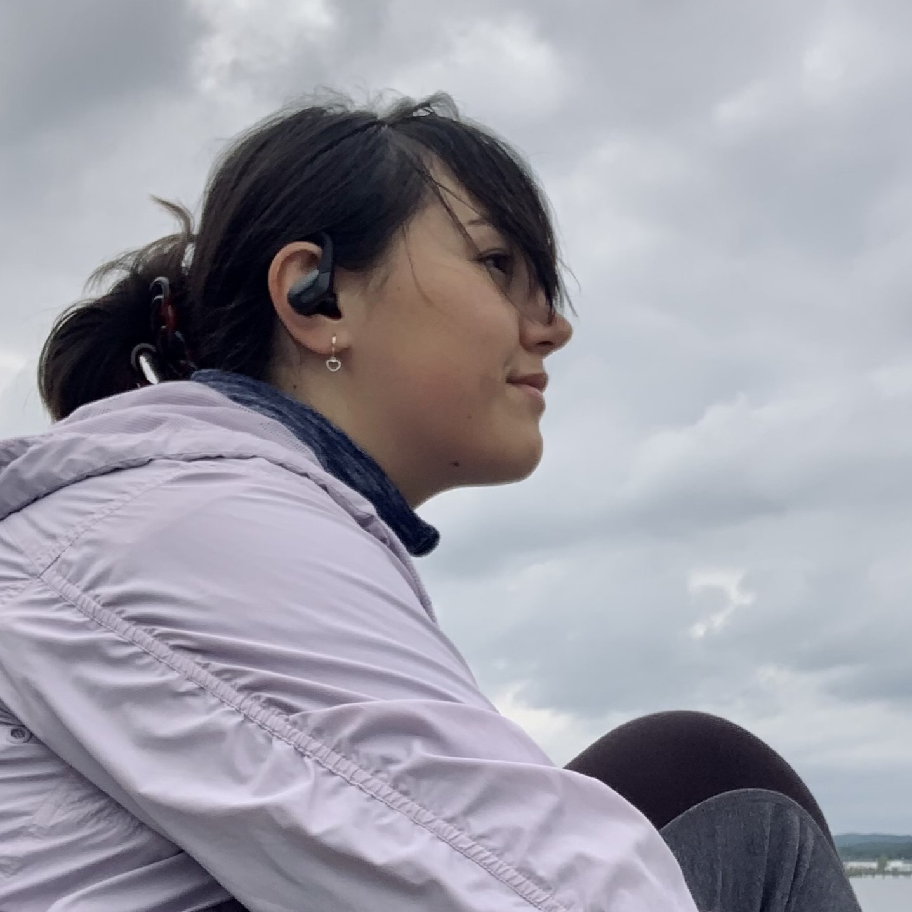
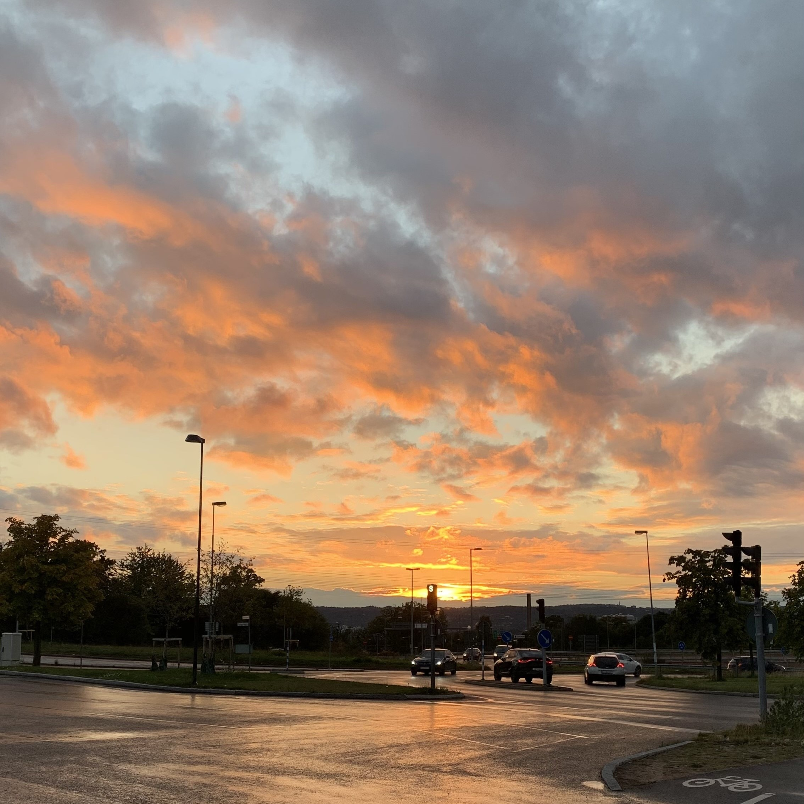

Some facts about me :)

Listening to music
My music is very important to me because it calms me down and transports me to a nice place. My favorite genres are Folk&Acoustic and Folk&Alternative.

Walking on nature
Going on a hike or walking around nature is my best way to escape for a moment in my reality and be conscious of everything that is sorrounding me.

Watching the sky and sunset
My favorite part of the day is the sunset, no matter at what time it is. Plus, I really like looking at the sky and see the clouds.